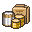

<!--
  gastify — Filter Dropdowns Reference Partial

  Copy-paste source for the canonical filter strip + 2 modals.
  Used by: Dashboard, History, Trends, Insights, Items, Reports.
  Shared CSS lives in ../assets/css/desktop-shell.css under
  "FILTER STRIP" and "FILTER MODAL" blocks.

  Filter model (matches BoletApp legacy useHistoryFiltersStore):
    temporal : all | year | quarter | month | week | day
    category : all | L1 | L2 | L3 | L4 | location
    L1 Rubro     (12 items — storeGroups)
    L2 Giro      (44 items — storeCategories)
    L3 Familia   (9 items  — itemGroups)
    L4 Categoría (42 items — itemCategories)
    location : country → cities tree

  State convention (visual):
    .active          committed filter (primary-soft bg + primary outline)
    .pending         user changed via chevron, not yet applied (warning bg + pulse)
    [no class]       original / empty

  Click-to-commit: clicking the row LABEL applies the pending value at
  that granularity level, then closes the modal. Chevrons change pending
  values without committing.

  JS wiring lives in each screen — keep it local; shared JS would force
  a build step that the mockup surface avoids.
-->

<!-- ============================================================
     BLOCK A — FILTER STRIP  (place above main content area)
     ============================================================ -->
<section class="filter-strip" aria-label="Filtros">
  <div class="filter-strip-row">
    <!-- Timeframe pills (Año/Trimestre/Mes/Semana) -->
    <div class="timeframe-pills" role="tablist" aria-label="Periodo">
      <button class="timeframe-pill" role="tab" aria-selected="false" data-period="year">Año</button>
      <button class="timeframe-pill" role="tab" aria-selected="false" data-period="quarter">Trimestre</button>
      <button class="timeframe-pill active" role="tab" aria-selected="true" data-period="month">Mes</button>
      <button class="timeframe-pill" role="tab" aria-selected="false" data-period="week">Semana</button>
    </div>

    <!-- Period navigator (< Abril 2026 >) -->
    <div class="period-nav">
      <button class="period-nav-btn" aria-label="Periodo anterior" data-action="prev-period">
        <svg viewBox="0 0 24 24" fill="none" stroke="currentColor" stroke-width="2.4" stroke-linecap="round" stroke-linejoin="round" width="16" height="16"><polyline points="15 18 9 12 15 6"/></svg>
      </button>
      <span class="period-label" data-period-label>Abril 2026</span>
      <button class="period-nav-btn" aria-label="Periodo siguiente" data-action="next-period">
        <svg viewBox="0 0 24 24" fill="none" stroke="currentColor" stroke-width="2.4" stroke-linecap="round" stroke-linejoin="round" width="16" height="16"><polyline points="9 18 15 12 9 6"/></svg>
      </button>
    </div>

    <!-- Filter icons (Calendar + Funnel) -->
    <div class="filter-icons">
      <!-- Time filter (Calendar) -->
      <div class="filter-icon-wrap">
        <button class="filter-icon-btn" aria-label="Filtro de tiempo" aria-expanded="false" data-modal-toggle="time-modal">
          <svg viewBox="0 0 24 24" fill="none" stroke="currentColor" stroke-width="2" stroke-linecap="round" stroke-linejoin="round"><rect x="3" y="4" width="18" height="18" rx="2"/><line x1="16" y1="2" x2="16" y2="6"/><line x1="8" y1="2" x2="8" y2="6"/><line x1="3" y1="10" x2="21" y2="10"/></svg>
        </button>
        <!-- Time modal — paste BLOCK B here (inside .filter-icon-wrap) -->
      </div>

      <!-- Category filter (Funnel) -->
      <div class="filter-icon-wrap">
        <button class="filter-icon-btn" aria-label="Filtro de categoría" aria-expanded="false" data-modal-toggle="cat-modal">
          <svg viewBox="0 0 24 24" fill="none" stroke="currentColor" stroke-width="2" stroke-linecap="round" stroke-linejoin="round"><polygon points="22 3 2 3 10 12.46 10 19 14 21 14 12.46 22 3"/></svg>
        </button>
        <!-- Category modal — paste BLOCK C here (inside .filter-icon-wrap) -->
      </div>
    </div>
  </div>
</section>

<!-- ============================================================
     BLOCK B — TIME MODAL  (child of .filter-icon-wrap)
     ============================================================ -->
<div class="filter-modal" id="time-modal" role="dialog" aria-label="Filtro de tiempo">
  <div class="filter-modal-header">
    <div class="filter-modal-title">Tiempo</div>
    <button class="filter-modal-btn ghost" data-action="close-modal" aria-label="Cerrar">✕</button>
  </div>
  <div class="filter-modal-body">
    <!-- Año -->
    <div class="time-slider-row">
      <button class="time-slider-label active" data-apply="year">Año</button>
      <div class="time-slider-ctrl">
        <button class="time-slider-arrow" data-adjust="year-prev" aria-label="Año anterior">
          <svg viewBox="0 0 24 24" fill="none" stroke="currentColor" stroke-width="2.4" stroke-linecap="round" width="14" height="14"><polyline points="15 18 9 12 15 6"/></svg>
        </button>
        <span class="time-slider-value active" data-value="year">2026</span>
        <button class="time-slider-arrow" data-adjust="year-next" aria-label="Año siguiente">
          <svg viewBox="0 0 24 24" fill="none" stroke="currentColor" stroke-width="2.4" stroke-linecap="round" width="14" height="14"><polyline points="9 18 15 12 9 6"/></svg>
        </button>
      </div>
    </div>
    <!-- Trimestre -->
    <div class="time-slider-row">
      <button class="time-slider-label" data-apply="quarter">Trimestre</button>
      <div class="time-slider-ctrl">
        <button class="time-slider-arrow" data-adjust="quarter-prev" aria-label="Trimestre anterior">
          <svg viewBox="0 0 24 24" fill="none" stroke="currentColor" stroke-width="2.4" stroke-linecap="round" width="14" height="14"><polyline points="15 18 9 12 15 6"/></svg>
        </button>
        <span class="time-slider-value" data-value="quarter">T2</span>
        <button class="time-slider-arrow" data-adjust="quarter-next" aria-label="Trimestre siguiente">
          <svg viewBox="0 0 24 24" fill="none" stroke="currentColor" stroke-width="2.4" stroke-linecap="round" width="14" height="14"><polyline points="9 18 15 12 9 6"/></svg>
        </button>
      </div>
    </div>
    <!-- Mes -->
    <div class="time-slider-row">
      <button class="time-slider-label" data-apply="month">Mes</button>
      <div class="time-slider-ctrl">
        <button class="time-slider-arrow" data-adjust="month-prev" aria-label="Mes anterior">
          <svg viewBox="0 0 24 24" fill="none" stroke="currentColor" stroke-width="2.4" stroke-linecap="round" width="14" height="14"><polyline points="15 18 9 12 15 6"/></svg>
        </button>
        <span class="time-slider-value" data-value="month">Abr</span>
        <button class="time-slider-arrow" data-adjust="month-next" aria-label="Mes siguiente">
          <svg viewBox="0 0 24 24" fill="none" stroke="currentColor" stroke-width="2.4" stroke-linecap="round" width="14" height="14"><polyline points="9 18 15 12 9 6"/></svg>
        </button>
      </div>
    </div>
    <!-- Semana -->
    <div class="time-slider-row">
      <button class="time-slider-label" data-apply="week">Semana</button>
      <div class="time-slider-ctrl">
        <button class="time-slider-arrow" data-adjust="week-prev" aria-label="Semana anterior">
          <svg viewBox="0 0 24 24" fill="none" stroke="currentColor" stroke-width="2.4" stroke-linecap="round" width="14" height="14"><polyline points="15 18 9 12 15 6"/></svg>
        </button>
        <span class="time-slider-value" data-value="week">Sem 1</span>
        <button class="time-slider-arrow" data-adjust="week-next" aria-label="Semana siguiente">
          <svg viewBox="0 0 24 24" fill="none" stroke="currentColor" stroke-width="2.4" stroke-linecap="round" width="14" height="14"><polyline points="9 18 15 12 9 6"/></svg>
        </button>
      </div>
    </div>
    <!-- Día -->
    <div class="time-slider-row">
      <button class="time-slider-label" data-apply="day">Día</button>
      <div class="time-slider-ctrl">
        <button class="time-slider-arrow" data-adjust="day-prev" aria-label="Día anterior">
          <svg viewBox="0 0 24 24" fill="none" stroke="currentColor" stroke-width="2.4" stroke-linecap="round" width="14" height="14"><polyline points="15 18 9 12 15 6"/></svg>
        </button>
        <span class="time-slider-value" data-value="day">1</span>
        <button class="time-slider-arrow" data-adjust="day-next" aria-label="Día siguiente">
          <svg viewBox="0 0 24 24" fill="none" stroke="currentColor" stroke-width="2.4" stroke-linecap="round" width="14" height="14"><polyline points="9 18 15 12 9 6"/></svg>
        </button>
      </div>
    </div>
  </div>
  <div class="filter-modal-footer">
    <button class="filter-modal-btn ghost" data-action="clear-time">✕ Limpiar filtro</button>
    <button class="filter-modal-btn primary" data-action="apply-time">Aplicar</button>
  </div>
</div>

<!-- ============================================================
     BLOCK C — CATEGORY MODAL  (child of .filter-icon-wrap)
     ============================================================ -->
<div class="filter-modal wide" id="cat-modal" role="dialog" aria-label="Filtro de categoría">
  <div class="filter-modal-header">
    <!-- Taxonomy level chips: L1/L2/L3/L4 + separator + Lugar -->
    <div class="taxonomy-chips" role="tablist" aria-label="Nivel de taxonomía">
      <button class="taxonomy-chip active" role="tab" aria-selected="true" data-cat-level="L1" title="Rubros (12)">
        
        <span class="chip-label">L1</span>
      </button>
      <button class="taxonomy-chip" role="tab" aria-selected="false" data-cat-level="L2" title="Giros (44)">
        
        <span class="chip-label">L2</span>
      </button>
      <button class="taxonomy-chip" role="tab" aria-selected="false" data-cat-level="L3" title="Familias (9)">
        
        <span class="chip-label">L3</span>
      </button>
      <button class="taxonomy-chip" role="tab" aria-selected="false" data-cat-level="L4" title="Categorías (42)">
        
        <span class="chip-label">L4</span>
      </button>
      <div class="taxonomy-chip-sep" aria-hidden="true"></div>
      <button class="taxonomy-chip" role="tab" aria-selected="false" data-cat-level="location" title="Ubicación" style="min-width: 48px;">
        <span style="font-size: 18px;">📍</span>
        <span class="chip-label">Lugar</span>
      </button>
    </div>
    <button class="filter-modal-btn ghost" data-action="close-modal" aria-label="Cerrar">✕</button>
  </div>

  <div class="filter-modal-body">
    <!-- L1 Rubro pane (active by default) -->
    <div class="cat-filter-flat" data-cat-pane="L1">
      <label class="cat-filter-row selected">
        <span class="row-check">✓</span>
        <span class="row-icon"></span>
        <span class="row-label">Supermercados</span>
        <span class="row-count">48 tx</span>
      </label>
      <label class="cat-filter-row">
        <span class="row-check"></span>
        <span class="row-icon"></span>
        <span class="row-label">Restaurantes</span>
        <span class="row-count">12 tx</span>
      </label>
      <label class="cat-filter-row">
        <span class="row-check"></span>
        <span class="row-icon"></span>
        <span class="row-label">Comercio de Barrio</span>
        <span class="row-count">8 tx</span>
      </label>
      <label class="cat-filter-row">
        <span class="row-check"></span>
        <span class="row-icon"></span>
        <span class="row-label">Salud y Bienestar</span>
        <span class="row-count">6 tx</span>
      </label>
      <label class="cat-filter-row">
        <span class="row-check"></span>
        <span class="row-icon"></span>
        <span class="row-label">Transporte y Vehículo</span>
        <span class="row-count">5 tx</span>
      </label>
      <label class="cat-filter-row">
        <span class="row-check"></span>
        <span class="row-icon"></span>
        <span class="row-label">Servicios y Finanzas</span>
        <span class="row-count">4 tx</span>
      </label>
      <label class="cat-filter-row">
        <span class="row-check"></span>
        <span class="row-icon"></span>
        <span class="row-label">Entretenimiento y Hospedaje</span>
        <span class="row-count">3 tx</span>
      </label>
    </div>

    <!-- L2 Giro pane — grouped by parent L1 -->
    <div class="cat-filter-flat" data-cat-pane="L2" hidden>
      <div class="cat-filter-group">
        <div class="cat-filter-group-header">
          Supermercados
          <span style="font-size: 10px; color: var(--ink-3); font-weight: 600;">3 giros</span>
          <svg class="chevron" viewBox="0 0 24 24" fill="none" stroke="currentColor" stroke-width="2" width="14" height="14"><polyline points="6 9 12 15 18 9"/></svg>
        </div>
        <div class="cat-filter-group-items">
          <button class="cat-filter-chip selected">✓ Supermercado Premium</button>
          <button class="cat-filter-chip">Supermercado Regular</button>
          <button class="cat-filter-chip">Mayorista</button>
        </div>
      </div>
      <div class="cat-filter-group">
        <div class="cat-filter-group-header">
          Restaurantes
          <span style="font-size: 10px; color: var(--ink-3); font-weight: 600;">4 giros</span>
          <svg class="chevron" viewBox="0 0 24 24" fill="none" stroke="currentColor" stroke-width="2" width="14" height="14"><polyline points="6 9 12 15 18 9"/></svg>
        </div>
        <div class="cat-filter-group-items">
          <button class="cat-filter-chip">Restaurante</button>
          <button class="cat-filter-chip">Cafetería</button>
          <button class="cat-filter-chip">Fast Food</button>
          <button class="cat-filter-chip">Delivery</button>
        </div>
      </div>
      <div class="cat-filter-group">
        <div class="cat-filter-group-header collapsed">
          Comercio de Barrio
          <span style="font-size: 10px; color: var(--ink-3); font-weight: 600;">5 giros</span>
          <svg class="chevron" viewBox="0 0 24 24" fill="none" stroke="currentColor" stroke-width="2" width="14" height="14"><polyline points="6 9 12 15 18 9"/></svg>
        </div>
      </div>
    </div>

    <!-- L3 Familia pane — flat (9 items) -->
    <div class="cat-filter-flat" data-cat-pane="L3" hidden>
      <label class="cat-filter-row selected">
        <span class="row-check">✓</span>
        <span class="row-icon"></span>
        <span class="row-label">Alimentos Frescos</span>
        <span class="row-count">42 items</span>
      </label>
      <label class="cat-filter-row">
        <span class="row-check"></span>
        <span class="row-icon"></span>
        <span class="row-label">Alimentos Envasados</span>
        <span class="row-count">38 items</span>
      </label>
      <label class="cat-filter-row">
        <span class="row-check"></span>
        <span class="row-icon"></span>
        <span class="row-label">Alimentos Preparados</span>
        <span class="row-count">12 items</span>
      </label>
      <label class="cat-filter-row">
        <span class="row-check"></span>
        <span class="row-icon"></span>
        <span class="row-label">Hogar</span>
        <span class="row-count">22 items</span>
      </label>
      <label class="cat-filter-row">
        <span class="row-check"></span>
        <span class="row-icon"></span>
        <span class="row-label">Salud y Cuidado</span>
        <span class="row-count">8 items</span>
      </label>
      <label class="cat-filter-row">
        <span class="row-check"></span>
        <span class="row-icon"></span>
        <span class="row-label">Productos Generales</span>
        <span class="row-count">15 items</span>
      </label>
    </div>

    <!-- L4 Categoría pane — grouped by parent L3 -->
    <div class="cat-filter-flat" data-cat-pane="L4" hidden>
      <div class="cat-filter-group">
        <div class="cat-filter-group-header">
          Alimentos Frescos
          <span style="font-size: 10px; color: var(--ink-3); font-weight: 600;">4 categorías</span>
          <svg class="chevron" viewBox="0 0 24 24" fill="none" stroke="currentColor" stroke-width="2" width="14" height="14"><polyline points="6 9 12 15 18 9"/></svg>
        </div>
        <div class="cat-filter-group-items">
          <button class="cat-filter-chip selected">✓ Frutas y Verduras</button>
          <button class="cat-filter-chip">Carnes y Mariscos</button>
          <button class="cat-filter-chip">Pan y Repostería</button>
          <button class="cat-filter-chip">Lácteos y Huevos</button>
        </div>
      </div>
      <div class="cat-filter-group">
        <div class="cat-filter-group-header">
          Alimentos Envasados
          <span style="font-size: 10px; color: var(--ink-3); font-weight: 600;">4 categorías</span>
          <svg class="chevron" viewBox="0 0 24 24" fill="none" stroke="currentColor" stroke-width="2" width="14" height="14"><polyline points="6 9 12 15 18 9"/></svg>
        </div>
        <div class="cat-filter-group-items">
          <button class="cat-filter-chip">Despensa</button>
          <button class="cat-filter-chip">Congelados</button>
          <button class="cat-filter-chip">Snacks y Golosinas</button>
          <button class="cat-filter-chip">Bebidas</button>
        </div>
      </div>
    </div>

    <!-- Location pane — Country → Cities tree -->
    <div class="loc-tree" data-cat-pane="location" hidden>
      <div class="loc-country">
        <svg class="chevron" viewBox="0 0 24 24" fill="none" stroke="currentColor" stroke-width="2" width="14" height="14"><polyline points="6 9 12 15 18 9"/></svg>
        <span>🇨🇱 Chile</span>
        <span class="loc-count">4 seleccionadas</span>
      </div>
      <div class="loc-cities">
        <label class="loc-city selected">
          <span class="row-check">✓</span>
          <span>Pucón</span>
        </label>
        <label class="loc-city selected">
          <span class="row-check">✓</span>
          <span>Santiago</span>
        </label>
        <label class="loc-city selected">
          <span class="row-check">✓</span>
          <span>Temuco</span>
        </label>
        <label class="loc-city selected">
          <span class="row-check">✓</span>
          <span>Villarrica</span>
        </label>
      </div>
      <div class="loc-country collapsed">
        <svg class="chevron" viewBox="0 0 24 24" fill="none" stroke="currentColor" stroke-width="2" width="14" height="14"><polyline points="6 9 12 15 18 9"/></svg>
        <span>🇦🇷 Argentina</span>
        <span class="loc-count">0</span>
      </div>
    </div>
  </div>

  <div class="filter-modal-footer">
    <button class="filter-modal-btn ghost" data-action="clear-cat">✕ Limpiar filtros</button>
    <div style="display: flex; gap: 8px;">
      <span style="font-size: 12px; color: var(--ink-3); align-self: center;">3 seleccionados</span>
      <button class="filter-modal-btn primary" data-action="apply-cat">Aplicar</button>
    </div>
  </div>
</div>

<!-- ============================================================
     BLOCK D — JS WIRING (paste into each screen <script>)
     Keep local — shared JS would force a build step.
     ============================================================ -->
<script>
  // Filter strip — timeframe pill active state
  document.querySelectorAll('.timeframe-pills .timeframe-pill').forEach(p => {
    p.addEventListener('click', () => {
      document.querySelectorAll('.timeframe-pills .timeframe-pill').forEach(x => {
        x.classList.remove('active');
        x.setAttribute('aria-selected', 'false');
      });
      p.classList.add('active');
      p.setAttribute('aria-selected', 'true');
    });
  });

  // Modal toggle (close-on-outside-click + close-on-ESC)
  document.querySelectorAll('[data-modal-toggle]').forEach(btn => {
    btn.addEventListener('click', (e) => {
      e.stopPropagation();
      const id = btn.dataset.modalToggle;
      const modal = document.getElementById(id);
      const wasOpen = modal.classList.contains('open');
      document.querySelectorAll('.filter-modal.open').forEach(m => m.classList.remove('open'));
      if (!wasOpen) {
        modal.classList.add('open');
        btn.setAttribute('aria-expanded', 'true');
      } else {
        btn.setAttribute('aria-expanded', 'false');
      }
    });
  });
  document.querySelectorAll('[data-action="close-modal"]').forEach(btn => {
    btn.addEventListener('click', (e) => {
      e.stopPropagation();
      const m = btn.closest('.filter-modal');
      if (m) m.classList.remove('open');
    });
  });
  document.addEventListener('click', (e) => {
    if (!e.target.closest('.filter-modal') && !e.target.closest('[data-modal-toggle]')) {
      document.querySelectorAll('.filter-modal.open').forEach(m => m.classList.remove('open'));
    }
  });
  document.addEventListener('keydown', (e) => {
    if (e.key === 'Escape') {
      document.querySelectorAll('.filter-modal.open').forEach(m => m.classList.remove('open'));
    }
  });

  // Taxonomy chip active + pane switch
  document.querySelectorAll('.taxonomy-chip').forEach(c => {
    c.addEventListener('click', () => {
      const level = c.dataset.catLevel;
      const modal = c.closest('.filter-modal');
      modal.querySelectorAll('.taxonomy-chip').forEach(x => {
        x.classList.remove('active');
        x.setAttribute('aria-selected', 'false');
      });
      c.classList.add('active');
      c.setAttribute('aria-selected', 'true');
      modal.querySelectorAll('[data-cat-pane]').forEach(p => {
        p.hidden = (p.dataset.catPane !== level);
      });
    });
  });

  // Category row selection (L1/L3 flat)
  document.querySelectorAll('.cat-filter-row').forEach(r => {
    r.addEventListener('click', (e) => {
      if (e.target.closest('[data-action]')) return;
      r.classList.toggle('selected');
      const check = r.querySelector('.row-check');
      if (check) check.textContent = r.classList.contains('selected') ? '✓' : '';
    });
  });

  // Category chip selection (L2/L4)
  document.querySelectorAll('.cat-filter-chip').forEach(c => {
    c.addEventListener('click', () => c.classList.toggle('selected'));
  });

  // Group header collapse (L2/L4 groups + Location countries)
  document.querySelectorAll('.cat-filter-group-header, .loc-country').forEach(h => {
    h.addEventListener('click', () => {
      h.classList.toggle('collapsed');
      const items = h.nextElementSibling;
      if (items && (items.classList.contains('cat-filter-group-items') || items.classList.contains('loc-cities'))) {
        items.style.display = h.classList.contains('collapsed') ? 'none' : '';
      }
    });
  });

  // Location city selection
  document.querySelectorAll('.loc-city').forEach(c => {
    c.addEventListener('click', () => {
      c.classList.toggle('selected');
      const check = c.querySelector('.row-check');
      if (check) check.textContent = c.classList.contains('selected') ? '✓' : '';
    });
  });

  // Time slider — value + pending + apply (illustrative, no real calc)
  document.querySelectorAll('.time-slider-label').forEach(lbl => {
    lbl.addEventListener('click', () => {
      const row = lbl.closest('.time-slider-row');
      document.querySelectorAll('.time-slider-label').forEach(x => x.classList.remove('active'));
      document.querySelectorAll('.time-slider-value').forEach(x => x.classList.remove('active'));
      row.querySelector('.time-slider-label').classList.add('active');
      row.querySelector('.time-slider-value').classList.add('active');
      row.querySelector('.time-slider-label').classList.remove('pending');
      row.querySelector('.time-slider-value').classList.remove('pending');
      lbl.closest('.filter-modal').classList.remove('open');
    });
  });
  document.querySelectorAll('.time-slider-arrow').forEach(a => {
    a.addEventListener('click', () => {
      const row = a.closest('.time-slider-row');
      row.querySelector('.time-slider-label').classList.add('pending');
      row.querySelector('.time-slider-value').classList.add('pending');
    });
  });
</script>
